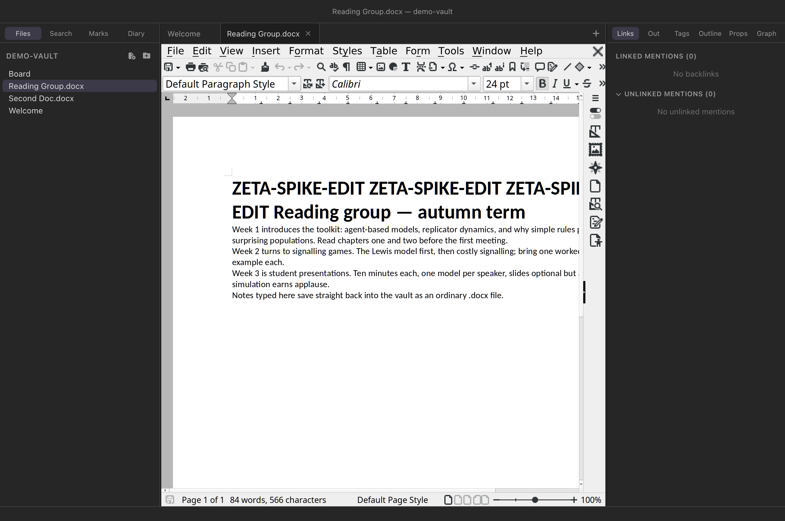
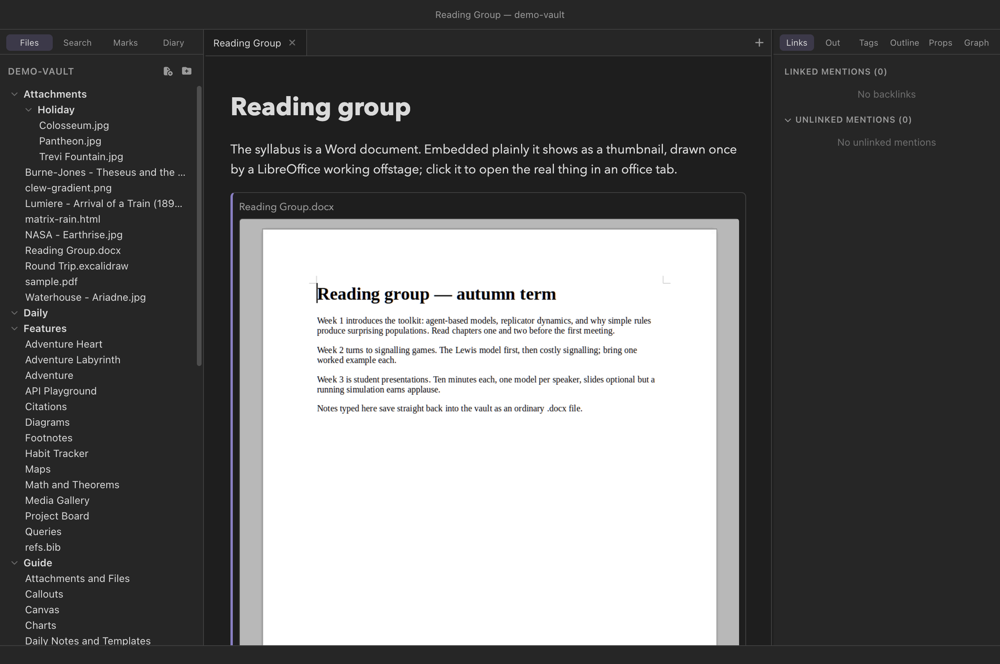

The vault
Office documents
A research vault rarely stays pure Markdown: syllabi arrive as Word
files, marks live in spreadsheets, and slides come back from
co-authors as PowerPoint. Clew opens all of these in tabs — not as
previews but in a full LibreOffice, running inside the app — and
saves your edits straight back into the vault file. The engine is a
one-time download, the document keeps its own format, and nothing
about the file stops being ordinary: it is the same
.docx in the same folder, editable tomorrow in Word.


.docx in its own tab. The full LibreOffice
Writer — styles, tables, tracked changes — not a viewer.What opens
Six extensions open in office tabs — the OOXML formats Word, Excel and PowerPoint write, and their OpenDocument counterparts:
| Application | OOXML | OpenDocument |
|---|---|---|
| Writer (documents) | .docx | .odt |
| Calc (spreadsheets) | .xlsx | .ods |
| Impress (presentations) | .pptx | .odp |
A document always saves in the format it already has — opening a
.docx never turns it into anything else, and there is no
“keep current format?” nagging. Legacy binary formats
(.doc, .xls, .ppt) are not
opened; convert them once in any office suite.
The engine is a one-time download
The editor is ZetaOffice — LibreOffice compiled to WebAssembly — and at 51 MB it does not ship inside every installer. The first time you open an office document, the tab offers the download; Settings → Office documents has the same button, plus Remove to reclaim the disk later. The download happens once, is verified against checksums pinned in the app (a tampered or silently-updated bundle is refused, not trusted), and is kept compressed on disk at about the same 52 MB. After that the network is never touched — documents open and edit entirely on your machine, on a train, wherever.
Tip
Until the engine is downloaded — or instead of it — the same tab offers the desktop-LibreOffice fallback: a read-only PDF preview and Open in LibreOffice.
One document at a time
An office document opens in its own tab, and that tab is unusual in two ways. First, it never takes part in tab navigation: clicking other files opens them beside it, never over it, and the office tab itself never navigates elsewhere. Behind the tab stands a running LibreOffice, and it stays running — switch to a note, come back, and the document is exactly as you left it, cursor and all, with no reload.
Second, only one office document can be open at a time, across every window. LibreOffice is a whole office suite: a running instance costs roughly 1.6 GB of memory, which is fine once and unreasonable four times. A second office tab shows a notice naming the document that holds the slot — close that one and the waiting tab opens itself, no reopening needed. Dragging the office tab into a split moves it rather than duplicating it, for the same reason.
Saving is explicit
Office documents are the one place in Clew that does not auto-save. Notes auto-save because every keystroke is a deliberate edit to plain text; a spreadsheet mid-reorganisation is a different matter, and a half-finished formula overwriting the file on disk every second would be wrong. So saving is LibreOffice's own explicit gesture: the toolbar Save button. When the document stores, Clew writes the bytes back into the vault file, and the tab's unsaved-changes dot clears.
Because unsaved edits are real, closing is guarded. Closing a dirty office tab — or its pane, or the window, or quitting the app — asks first: Save, Discard Changes, or Cancel. A clean tab closes silently, and closing the tab is also what shuts the LibreOffice instance down and frees its memory.
Use the toolbar Save
Keyboard save shortcuts (⌘S/Ctrl+S) are not reliably wired through to the embedded LibreOffice yet — the toolbar button is the gesture that counts. The tab's dot tells you the truth either way.
Embedding office documents
Office documents also embed — in notes and on canvases — and the embed can be one of two very different things:
You write
![[Report.docx]] a static thumbnail (the default)
![[Report.docx|live]] a full, editable LibreOffice
![[Report.docx|live|700]] live, 700 px tall
The thumbnail is a picture of the document, rendered
once by a LibreOffice working offstage and cached in the vault's
.clew/cache; it refreshes when the document changes and
costs nothing to show after that. Click it (or its title) to open the
real thing in an office tab. On a canvas the same thumbnail is what a
document node shows by default, and the node's context menu flips it to
Live.


.docx embedded in a note the plain way: a
thumbnail, drawn once by a LibreOffice working offstage and cached in
the vault. Clicking it opens the document in an office tab.
The live embed is the full editor — the document
editing in place, in the middle of your note. Every live embed boots
its own LibreOffice at the usual ~1.6 GB, and deliberately ignores
the one-document rule: writing |live is your signature on
the memory bill, and a machine with the headroom is entitled to spend
it. Edits save with the embed's own toolbar Save, mark the note's tab
dirty, and get the same Save / Discard / Cancel guard when the tab or
window closes.
A live embed lives with its view
The editor survives edits to the note around it, but it is part of the note's preview: switching the tab away, toggling to source mode, or navigating the note elsewhere tears the preview down — and unsaved embed edits with it, silently. Save before you leave, or use an office tab for longer sessions; the tab survives everything short of closing it.
If the file changes on disk
Vault files lead ordinary lives — synced folders, co-authors, other apps. If the open document changes on disk while you have no unsaved edits, the tab quietly reloads and shows the new version. If you do have unsaved edits, a banner appears instead: Load disk version discards your edits and reloads; Keep my version carries on, and your next save overwrites the disk copy. Nothing is merged — these are binary formats, and pretending otherwise loses someone's work.
Without the download: desktop LibreOffice
If LibreOffice is installed on the machine, office tabs offer two more things whether or not the engine is downloaded, from the same panel that offers the download and from the one-document notice:
- Preview as PDF — the document is converted headlessly by your LibreOffice into the vault's cache and shown in Clew's PDF viewer, read-only. The conversion is cached and redone only when the document changes.
- Open in LibreOffice — hands the vault file to the desktop app for editing out there. Without LibreOffice this becomes Open in default app, which uses whatever owns the format on your system.
On iPad
Clew for iOS does not carry the office engine. A running LibreOffice holds about 1.6 GB, more than iPadOS lets an app keep, so the download would buy nothing — and the iPad app offers none. Office documents are still ordinary files in the vault, and every surface above is backed by what iPadOS has built in, Quick Look:
- Tabs open read-only. A
.docx,.xlsxor.pptxtab shows one button, Open in Quick Look, which presents the document in the system viewer — the one the Files app uses — with sharing from its own toolbar. To edit, open the file from the Files app in Pages, Word or any office app; the change lands in the vault like any other external edit. - Embeds and canvas nodes show thumbnails,
rendered by Quick Look's thumbnail service and cached in the same
.clew/cache/office-thumbs/the desktop uses, so a vault in iCloud Drive reuses whichever device rendered first. A|liveembed has no engine to boot and shows an empty frame; in a vault the iPad shares, prefer the plain embed and open the document from its title. - OpenDocument formats have no previewer. Quick
Look cannot display
.odt,.odsor.odp: the tab's button opens only a placeholder, and their embeds say why there is no picture rather than showing one. - No Settings section. Settings on the iPad has no Office documents entry, because there is nothing to download or remove.
Limitations, honestly
- Clipboard stays inside. Copy and paste work within the document, but the bridge between LibreOffice-in-wasm and the system clipboard is not functional in the current engine build — text copied in a note cannot yet be pasted into the document, nor the reverse.
- The File menu is pruned on purpose. Open, Recent Documents, Save As and friends act on the engine's internal scratch filesystem, not your disk, so they are removed rather than left to mislead. The vault file you opened is the document; the toolbar Save is the exit.
- Memory. Expect the app to hold roughly an extra 1.6 GB while an office tab is open. Closing the tab returns it.
- Boot time. A document takes two to three seconds to open cold — LibreOffice is starting up, once per opened tab, not per keystroke.
Reference
| Behaviour | Detail |
|---|---|
| Formats | .docx .xlsx .pptx
.odt .ods .odp; each saves
in its own format. |
| Engine | ZetaOffice (LibreOffice wasm); 51 MB one-time download, checksum-verified, ~52 MB on disk, removable. |
| Settings | Settings → Office documents — download or remove the engine. |
| Instances | One office document at a time, app-wide; a blocked tab opens itself when the slot frees. |
| Saving | Explicit — LibreOffice's toolbar Save; no auto-save; dirty dot on the tab. |
| Closing dirty | Save / Discard Changes / Cancel — on tab close, pane close, window close, and quit. |
| External change | Clean tab reloads silently; dirty tab gets a Keep / Load banner. |
| Fallback | PDF preview via desktop LibreOffice (cached in
.clew/cache), or open externally. |
| Embeds | ![[x.docx]] static thumbnail (cached, auto-
refreshed); ![[x.docx|live]] editable LibreOffice.
Canvas nodes: thumbnail by default, Live via the context
menu. |
| iPad | No engine: tabs open read-only in Quick Look; thumbnails come
from Quick Look into the same cache; |live embeds show
an empty frame; OpenDocument formats cannot be previewed. |
See also
- Attachments and files — the other viewer tabs: images, PDFs, audio, video.
- Vaults and files — vaults are ordinary folders; office documents are ordinary files in them.
- Navigation, tabs and splits — how tabs, panes and history behave elsewhere.
- Settings and hotkeys — the engine download lives beside the app's other settings.